sprung roll、front unsprung roll 與 rear unsprung roll 三個自由度；比較理想 modal damping、實體前後 roll damper 拓樸與 1DOF 簡化模型。
| category | name | number |
|---|---|---|
| 導出量 | hl_roll_gradient_deg_per_g | 0.5844146282775677 |
| 導出量 | hl_roll_mode_1_hz | 6.048981609736218 |
| 導出量 | hl_roll_mode_2_hz | 19.310618827360955 |
| 導出量 | hl_roll_mode_3_hz | 22.44258147223825 |
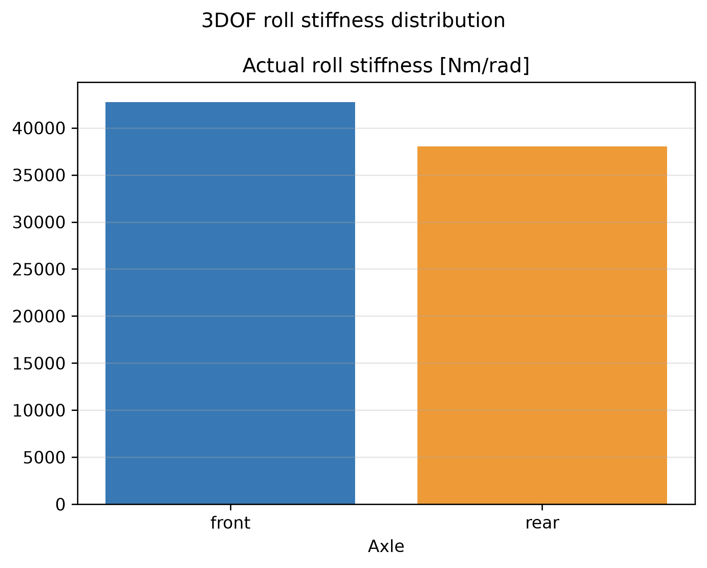
共 41 筆資料；完整數據請開啟 CSV。
| sprung | front_unsprung | rear_unsprung |
|---|---|---|
| 45.0 | 0.0 | 0.0 |
| 0.0 | 11.71875 | 0.0 |
| 0.0 | 0.0 | 11.532 |
| sprung | front_unsprung | rear_unsprung |
|---|---|---|
| 2667.9347817576013 | -740.9459685243002 | -585.2280068108856 |
| -740.9459685243 | 1473.2411287631314 | -39.97324649319002 |
| -585.2280068108856 | -39.97324649318994 | 1330.1695081789333 |
| sprung | front_unsprung | rear_unsprung |
|---|---|---|
| 5335.869563515203 | -1481.8919370486003 | -1170.4560136217713 |
| -1481.8919370486 | 2946.482257526263 | -79.94649298638004 |
| -1170.4560136217713 | -79.94649298637988 | 2660.3390163578665 |
| mode_1 | mode_2 | mode_3 |
|---|---|---|
| 0.13241056294379877 | 0.02271415147734133 | -0.06460442992390626 |
| 0.09900248282834376 | 0.12254538461879654 | 0.24599689111000575 |
| 0.09132208933833509 | -0.2635173593722585 | 0.09452039199161373 |
| mode | natural_frequency_hz | target_zeta_low | target_zeta_high |
|---|---|---|---|
| 1 | 6.048981609736218 | 1.0 | 0.5 |
| 2 | 19.310618827360955 | 1.0 | 0.5 |
| 3 | 22.44258147223825 | 1.0 | 0.5 |
| sprung | front_unsprung | rear_unsprung |
|---|---|---|
| 234722.3574079227 | -135049.41026250293 | -99672.94714541978 |
| -135049.41026250293 | 197549.41026250293 | 0.0 |
| -99672.94714541978 | 0.0 | 161176.94714541978 |
| axle | spring_rate_n_per_m | wheel_rate_n_per_m | tire_roll_stiffness_n_m_per_rad | suspension_roll_stiffness_n_m_per_rad | actual_roll_stiffness_n_m_per_rad | roll_stiffness_distribution | roll_gradient_deg_per_g |
|---|---|---|---|---|---|---|---|
| front | 86431.62256800188 | 86431.62256800188 | 62500.0 | 135049.41026250293 | 42726.46590131862 | 0.5290484616169472 | |
| rear | 64823.71692600141 | 64823.71692600141 | 61504.0 | 99672.94714541978 | 38034.50214068721 | 0.4709515383830528 | |
| total | 80760.96804200583 | 1.0 | 0.5844146282775677 |
| category | name | number |
|---|---|---|
| 導出量 | hl_roll_response_physical_low_fit_error | 0.3009778567774271 |
| 導出量 | hl_roll_response_physical_high_fit_error | 0.3009778567774271 |
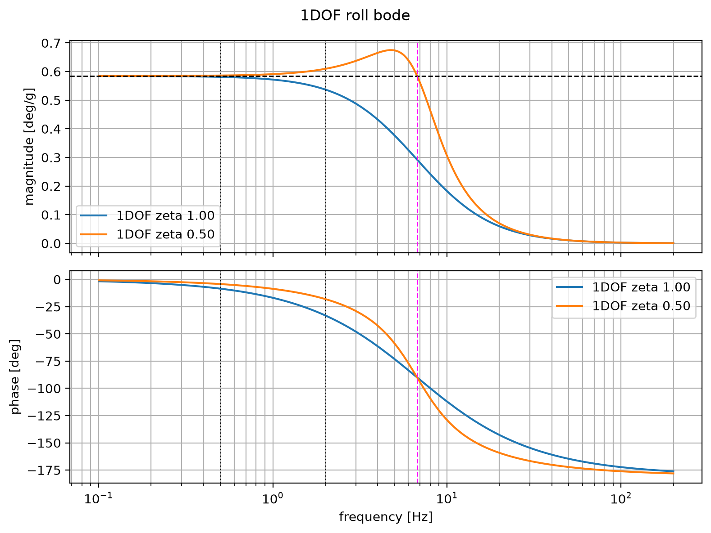
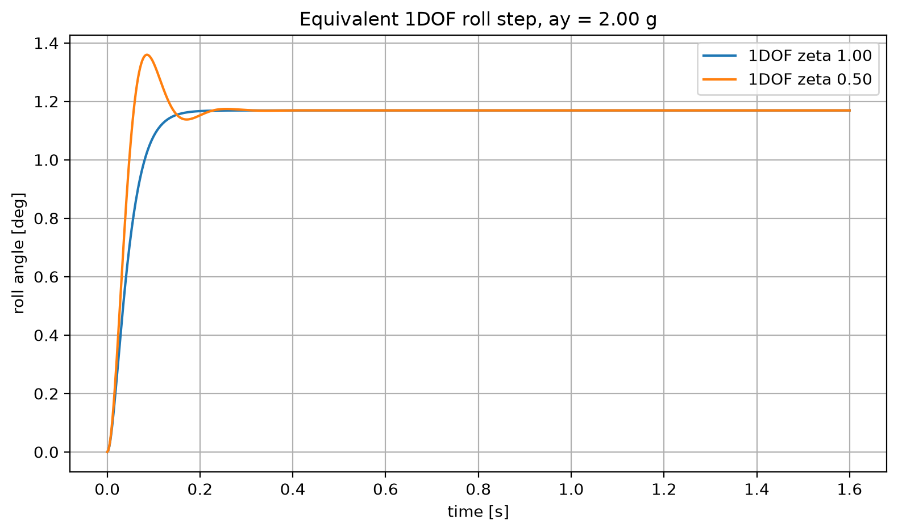
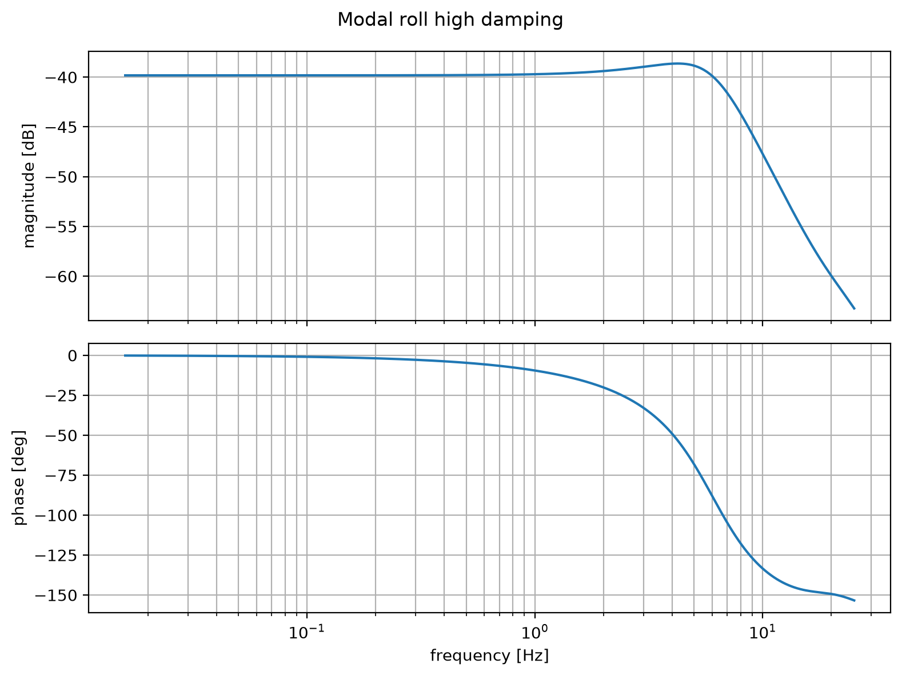
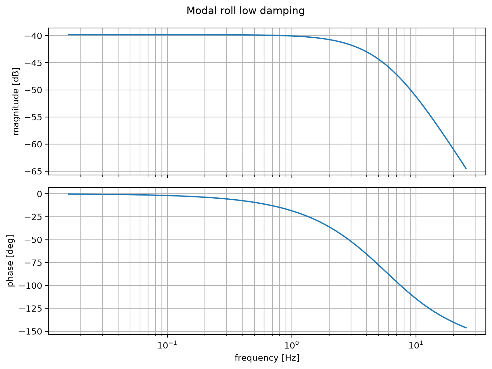
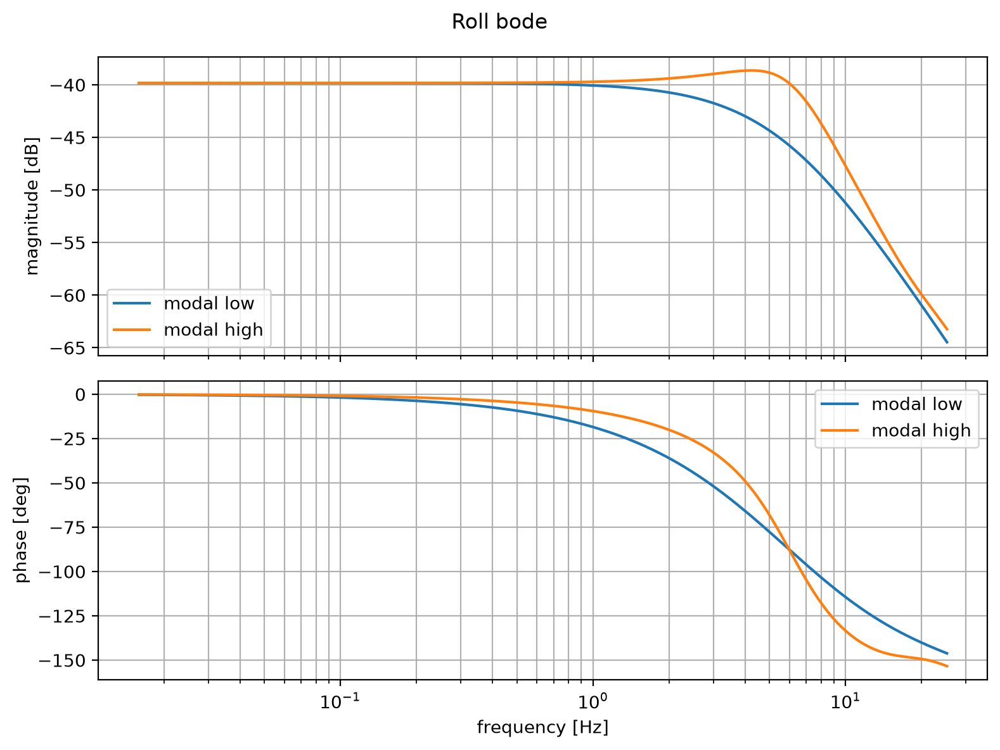
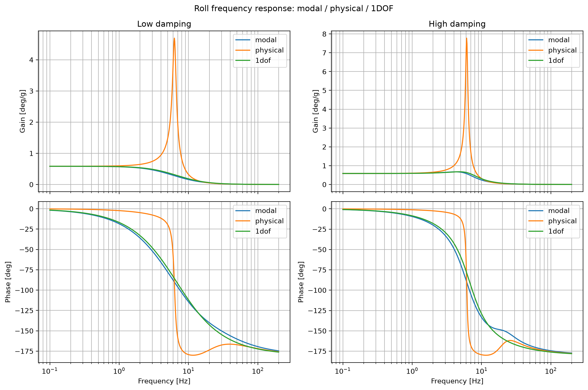
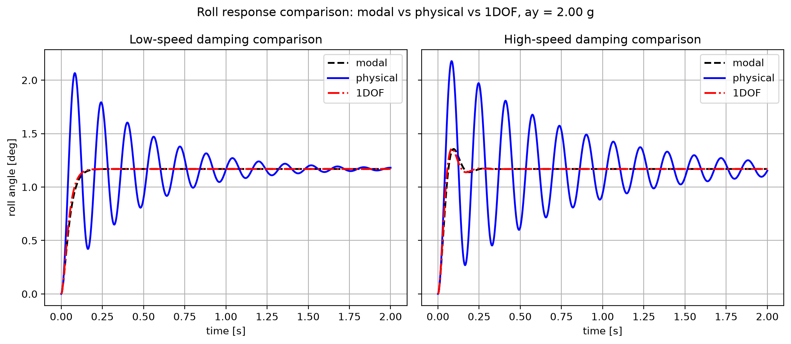
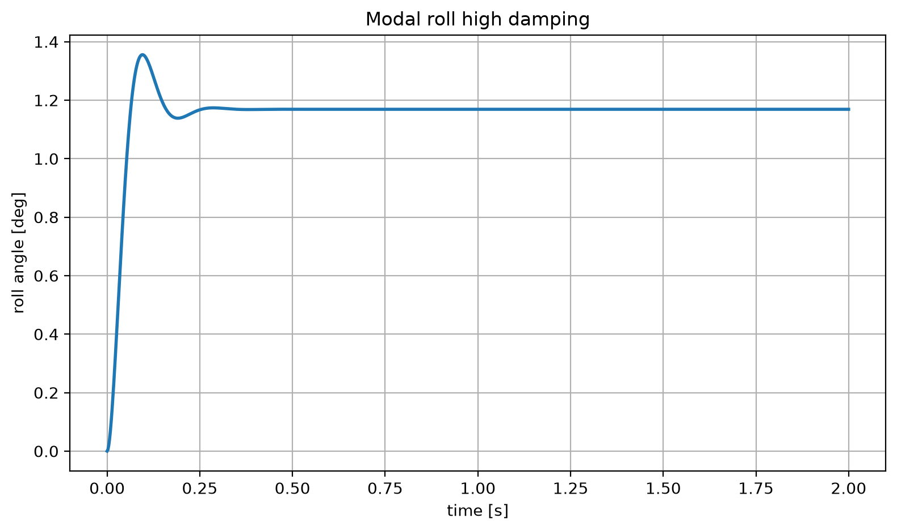
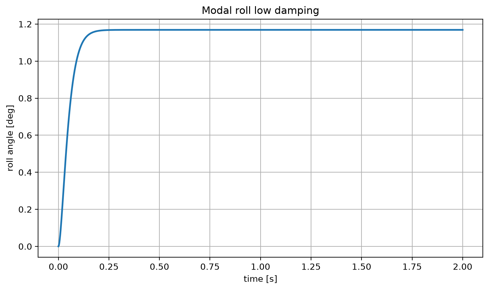
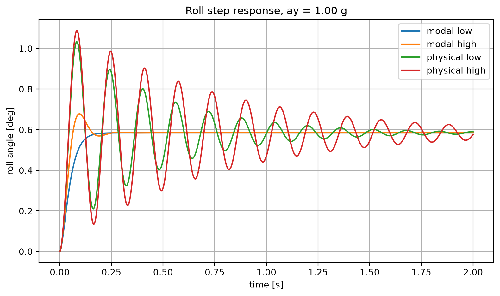
| category | name | number |
|---|---|---|
| 輸入量 | ms | 260.0 |
| 輸入量 | mu | 15.0 |
| 輸入量 | MR | 1.0 |
| 輸入量 | Kt | 80000.0 |
| 輸入量 | L | 1.53 |
| 輸入量 | t | 1.25 |
| 輸入量 | h_cog | 0.3 |
| 輸入量 | ax | 2.0 |
| 輸入量 | ay | 2.0 |
| 輸入量 | Ks_pitch_N_per_m | 140872.29401066582 |
| 輸入量 | Ks_roll_N_per_m | 86431.62256800188 |
| 輸入量 | hl_front_weight_ratio | 0.5 |
| 輸入量 | hl_rear_track_m | 1.24 |
| 輸入量 | hl_front_roll_center_m | 0.025 |
| 輸入量 | hl_rear_roll_center_m | 0.05 |
| 輸入量 | hl_sprung_roll_inertia_kg_m2 | 45.0 |
| 輸入量 | hl_rear_heave_spring_ratio | 0.8 |
| 輸入量 | hl_rear_roll_spring_ratio | 0.75 |
| 輸入量 | hl_front_roll_motion_ratio | 1.0 |
| 輸入量 | hl_rear_roll_motion_ratio | 1.0 |
| 輸入量 | hl_front_independent_motion_ratio | 0.5 |
| 輸入量 | hl_rear_independent_motion_ratio | 0.5 |
| 輸入量 | hl_front_heave_low_bump_zeta | 0.9 |
| 輸入量 | hl_front_heave_low_rebound_zeta | 0.9 |
| 輸入量 | hl_front_heave_high_bump_zeta | 0.35 |
| 輸入量 | hl_front_heave_high_rebound_zeta | 0.4 |
| 輸入量 | hl_rear_heave_low_bump_zeta | 1.0 |
| 輸入量 | hl_rear_heave_low_rebound_zeta | 0.9 |
| 輸入量 | hl_rear_heave_high_bump_zeta | 0.35 |
| 輸入量 | hl_rear_heave_high_rebound_zeta | 0.4 |
| 輸入量 | hl_front_roll_low_zeta | 1.0 |
| 輸入量 | hl_front_roll_high_zeta | 0.5 |
| 輸入量 | hl_rear_roll_low_zeta | 1.0 |
| 輸入量 | hl_rear_roll_high_zeta | 0.5 |
| 輸入量 | hl_knee_velocity_mm_s | 50.0 |
| 輸入量 | hl_acceleration_g | 1.2 |
| 輸入量 | hl_reference_case_g | 1.0 |
| 輸入量 | hl_roll_gradient_deg_per_g | 0.5844146282775677 |
| 導出量 | hl_roll_response_physical_low_fit_error | 0.3009778567774271 |
| 導出量 | hl_roll_response_physical_high_fit_error | 0.3009778567774271 |
共 600 筆資料；完整數據請開啟 CSV。
共 1200 筆資料；完整數據請開啟 CSV。
共 600 筆資料；完整數據請開啟 CSV。
共 1200 筆資料；完整數據請開啟 CSV。
| model | speed | pole_real_per_s | pole_imag_per_s | natural_frequency_hz | damping_ratio |
|---|---|---|---|---|---|
| modal | low | -38.00687016539996 | 0.0 | 6.048981258275285 | 1.0 |
| modal | low | -38.00687458198843 | 0.0 | 6.048981961197172 | 1.0 |
| modal | low | -141.0108981615481 | 2.6788499612455717e-06 | 22.442581472238246 | 0.9999999999999998 |
| modal | low | -141.0108981615481 | -2.6788499612455717e-06 | 22.442581472238246 | 0.9999999999999998 |
| modal | low | -121.33219648861976 | 4.830716940493565e-06 | 19.31061882736096 | 0.9999999999999992 |
| modal | low | -121.33219648861976 | -4.830716940493565e-06 | 19.31061882736096 | 0.9999999999999992 |
| physical | low | -175.83221936172728 | 0.0 | 27.984566866237365 | 1.0 |
| physical | low | -2.2737814724506906 | 39.392186100384144 | 6.279896707818562 | 0.057625718652465324 |
| physical | low | -2.2737814724506906 | -39.392186100384144 | 6.279896707818562 | 0.057625718652465324 |
| physical | low | -101.59227642517793 | 0.0 | 16.168912973025293 | 1.0 |
| physical | low | -92.54049113410755 | 81.48777383597694 | 19.62452072167214 | 0.7505037605264882 |
| physical | low | -92.54049113410755 | -81.48777383597694 | 19.62452072167214 | 0.7505037605264882 |
| 1dof | low | -42.36375957378389 | 0.0 | 6.742401744124311 | 1.0 |
| 1dof | low | -42.36376083632232 | 0.0 | 6.742401945063544 | 1.0 |
| modal | high | -19.00343618684706 | 32.91491699401213 | 6.048981609736224 | 0.49999999999999944 |
| modal | high | -19.00343618684706 | -32.91491699401213 | 6.048981609736224 | 0.49999999999999944 |
| modal | high | -70.50544908077406 | 122.11902001836114 | 22.442581472238253 | 0.4999999999999997 |
| modal | high | -70.50544908077406 | -122.11902001836114 | 22.442581472238253 | 0.4999999999999997 |
| modal | high | -60.66609824431 | 105.07676445611003 | 19.310618827360983 | 0.4999999999999999 |
| modal | high | -60.66609824431 | -105.07676445611003 | 19.310618827360983 | 0.4999999999999999 |
| physical | high | -1.3970586742586448 | 38.4065130019623 | 6.116629086008799 | 0.03635152478123528 |
| physical | high | -1.3970586742586448 | -38.4065130019623 | 6.116629086008799 | 0.03635152478123528 |
| physical | high | -68.6008483862781 | 120.22193541332263 | 22.02982119907381 | 0.4956083856655568 |
| physical | high | -68.6008483862781 | -120.22193541332263 | 22.02982119907381 | 0.4956083856655568 |
| physical | high | -46.7653531894687 | 112.93915588984429 | 19.454861712816566 | 0.3825746610493244 |
| physical | high | -46.7653531894687 | -112.93915588984429 | 19.454861712816566 | 0.3825746610493244 |
| 1dof | high | -21.181880102526552 | 36.68809253740824 | 6.742401844593926 | 0.5000000000000001 |
| 1dof | high | -21.181880102526552 | -36.68809253740824 | 6.742401844593926 | 0.5000000000000001 |
共 600 筆資料；完整數據請開啟 CSV。
共 1200 筆資料；完整數據請開啟 CSV。
共 600 筆資料；完整數據請開啟 CSV。
共 1200 筆資料；完整數據請開啟 CSV。
| case | front_linear_damping_n_s_per_m | rear_linear_damping_n_s_per_m | fit_error_frobenius | relative_fit_error |
|---|---|---|---|---|
| low | 1478.2900127333573 | 1305.1659180249644 | 2157.3077924662875 | 0.3009778567774271 |
| high | 739.1450063666787 | 652.5829590124822 | 1078.6538962331438 | 0.3009778567774271 |
共 600 筆資料；完整數據請開啟 CSV。
共 1200 筆資料；完整數據請開啟 CSV。
共 600 筆資料；完整數據請開啟 CSV。
共 1200 筆資料；完整數據請開啟 CSV。
| model | speed | final | peak_abs | peak_time_s | settling_2_percent_s | overshoot_percent |
|---|---|---|---|---|---|---|
| modal | low | 1.1688292565551357 | 1.168829256555133 | 1.018348623853211 | 0.15512927439532945 | 0.0 |
| physical | low | 1.1688292565551357 | 2.0660445900989726 | 0.08256880733944953 | 1.6839032527105922 | 76.76188190122649 |
| 1dof | low | 1.1688292565551355 | 1.1688292565551346 | 0.9157631359466222 | 0.14011676396997497 | 0.0 |
| modal | high | 1.1688292565551357 | 1.355609066575604 | 0.0950792326939116 | 0.21267723102585487 | 15.980076557200512 |
| physical | high | 1.1688292565551357 | 2.1780756825153187 | 0.08256880733944953 | 2.714762301918265 | 86.34677993385556 |
| 1dof | high | 1.1688292565551355 | 1.3593337920540436 | 0.08507089241034195 | 0.19266055045871558 | 16.298748036165513 |